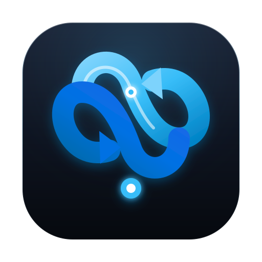
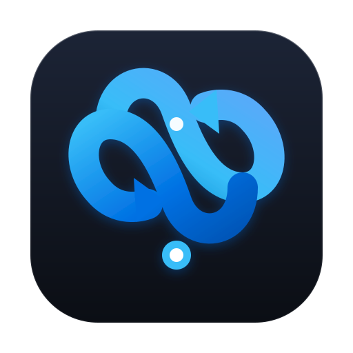
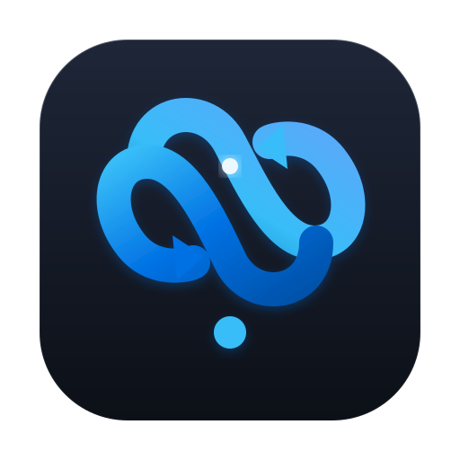

y-sync Logo 方案 1（莫比乌斯流光）细化迭代
基于方案 1 延伸 4 组精修变体：按最新迭代倒序展示 · 支持深浅色对比与小尺寸穿透力校验
🌙 切换深色
迭代 4：明朗科技蓝底板版
明朗高反差
Apple 官方高能科技蓝 Squircle 底板，搭配纯白与天青色流环，在 Dock 栏与浅/深色壁纸上视觉冲击力与辨识度极强。

迭代 3：微晶漫反射与发光核
精致微光
加入 macOS Sequoia 风格的环境光晕、玻璃切边反光与弧面高光条，交汇处带有律动能量脉冲，层次感最丰富。

迭代 2：负空间与小尺寸穿透优化
推荐标准
将线条粗细由 38px 强化至 44px，扩大左右两环内腔负空间，箭头放大 30%，在 16px/32px 下依然极为清晰。

迭代 1：方案 1 原始基准版
原始基准
方案 1 原始形态，午夜深空底色搭配青蓝莫比乌斯无限流，线条纤巧优雅。
小尺寸辨识度校验 (Favicon / 菜单栏 / 启动台)
迭代 4 (明朗蓝底)
64px
32px
16px
迭代 3 (高光发光核)
64px
32px
16px
迭代 2 (负空间强化)
64px
32px
16px
迭代 1 (原始基准)
64px
32px
16px